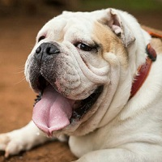
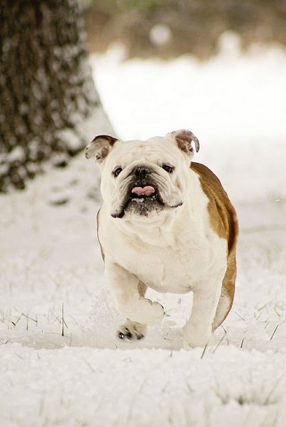
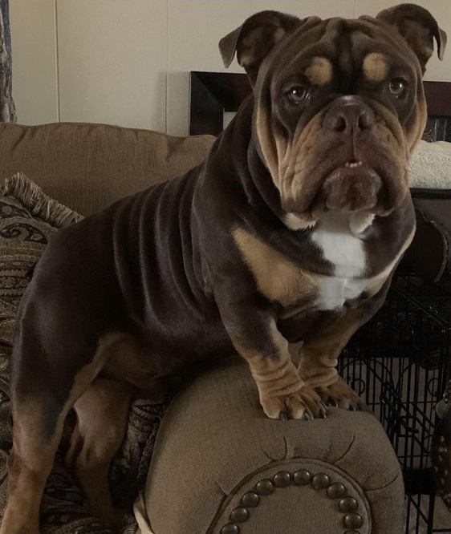
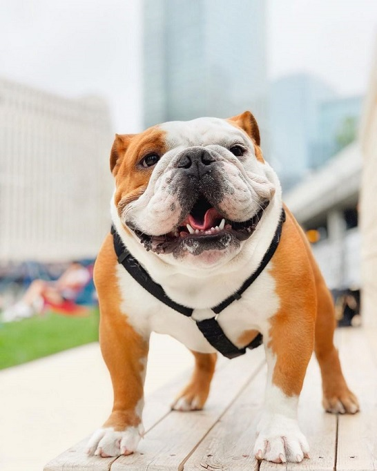
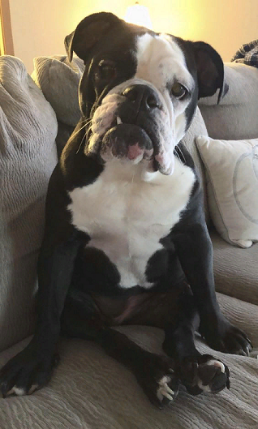
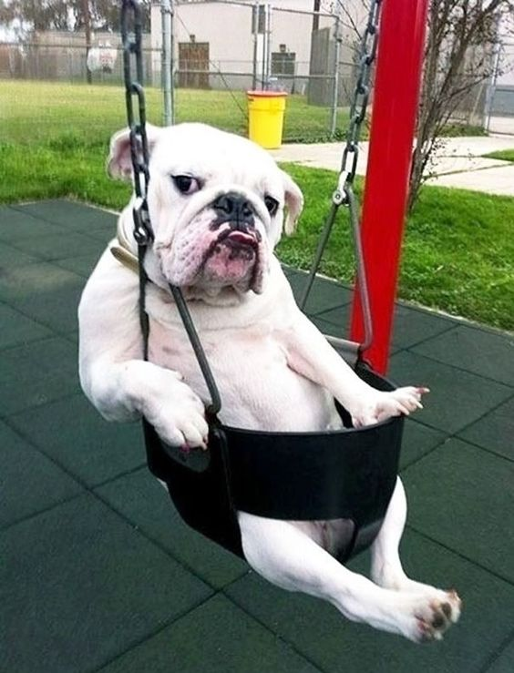
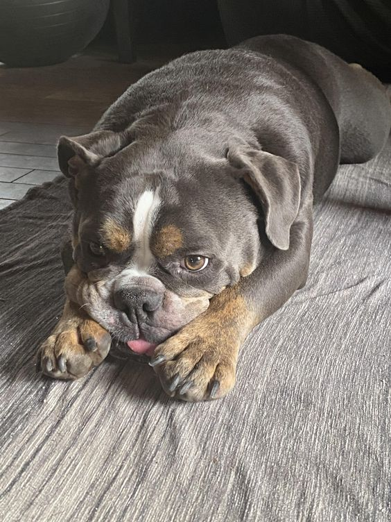

Английский бульдог

Оценка породы:
Ум
Линька
Популярность
Охранные качества
Игровая активность
Сторожевые качества
Дружелюбность к детям
Склонность к дрессировке
Характеристика породы
Краткое описание
Условия содержания:
Квартира
Длина шерсти:
Короткая
Размер взрослой собаки:
Рост в холке 30-40 см,
вес кобеля – 16-27 кг, суки – 15-25 кг.
вес кобеля – 16-27 кг, суки – 15-25 кг.
Средняя продолжительность жизни:
10-12 лет
Выгул:
Ежедневный, до 1,5 часа в стуки
Потребность в физической нагрузке:
Меньше часа в день
Стоимость щенка:
10000-70000 руб. (в зависимости от класса)
Фото взрослой собаки






Стоимость щенков
Пет-класс – 15 000 - 18 000 руб.
Брид-класс – 30 000 - 36 000 руб.
Шоу-класс – от 50 000 руб.
Особенности характера и поведения
Современный английский бульдог сохранил мало от своих свирепых предков. Это спокойная собака, обладающая крайне флегматичным темпераментом и практически не выходящая из себя.
Достоинства
Животное превосходный компаньон, так как предпочитает находиться в обществе хозяина. Никогда не выходит и себя и редко подает голос.
Английский бульдог относится к детям дружелюбно и снисходительно, для малышей становится нянькой и защитником.
Развитый интеллект позволяет бульдогу легко понимать хозяина, запоминать около 300-400 слов и понимать их смысл. К незнакомым людям питомец относится недоверчиво, но агрессии не проявляет. Легко приспосабливается к распорядку дня хозяина.
Недостатки
Бульдоги крайне медлительны и упрямы – поэтому иногда могут возникать трудности при дрессировке: если пес не захочет что-то делать, заставить его будет трудно.
Любит точить зубы о различные предметы, может портить мебель или обувь.
Собака пускает слюни и издает специфический запах. Не подойдет людям, ведущим активный образ жизни.
Уход и содержание
Бульдог неприхотлив, однако требует правильного питания.
Собаки склонны к ожирению и перекармливать их категорически нельзя.
Собаки плохо переносят жару, потому нельзя допускать их перегревания. В целом животные очень самодостаточные и не требуют постоянного внимания. Бульдогу нужно предоставлять полную свободу перемещения: нельзя сажать животное на цепь, это подорвет доверие к хозяину.
В длительные поездки собаку лучше брать с собой, так как бульдоги тоскуют по хозяину и могут болеть и отказываться от пищи в его отсутствие.
Питание
При кормлении бульдога нужно выбирать легкие, но питательные продукты, чтобы собака не набирала лишний вес. Английский бульдог часто страдает от аллергических реакций, поэтому пища со стола хозяина не подойдет.
Сухие корма для собак этой породы должны содержать большое количество протеина, чтобы мускулатура животного гармонично развивалась. Подойдут только дорогие профессиональные корма, нельзя давать бульдогу дешевые заменители, это приведет к развитию мочекаменной болезни.
Ветеринары считают, что данную породу лучше кормить натуральными продуктами, ориентируясь на особенности пищеварения и физиологии собак:
Мясо в рационе составляет 40-45%, лучше всего подойдет говядина и печень, другие субпродукты, за исключением селезенки. В качестве лакомства следует давать свиные или говяжьи ушки, сырые или копченые.
Бульдогу можно давать ряженку, и кефир. Сыры лучше исключить из рациона.
Рыба и морепродукты бульдогу противопоказаны.
Из круп подходит рисовая или гречневая. Овсяная и манная каши для собаки слишком калорийны. Нельзя подкармливать питомца хлебобулочными изделиями, печеньем или конфетами.
Яиц собаке можно не больше трех в неделю. Как щенкам, так и взрослым собакам разрешается давать небольшое количество творога.
В рацион щенка можно включать вареную картошку и молоко. Режим кормления зависит от возраста животного:
Щенка в возрасте 1-2 месяца кормят 6 раз в сутки с равными промежутками. Ночной перерыв составляет 7 часов.
С 2 до 3 месяцев число кормлений – 5, с интервалом 2-3 часа, молочные каши и картофель постепенно исключаются из рациона.
С 4 месяцев до полугода количество кормлений должно равняться 4, полугодовалый щенок ест три раза в сутки, к 10-12 месяцу жизни пес считается взрослым и кормить его следует дважды: утром и вечером.
Здоровье
Английский бульдог, как любая декоративная собака, склонен к различным заболеванием и в целом обладает достаточно хрупким здоровьем.
Псы плохо переносят перепады температуры и подвержены простудам и тепловым ударам. Оптимально содержать питомца в помещении с температурой 20-25 градусов без сквозняков.
В жару собаку нужно выгуливать в прохладных тенистых местах, обеспечивать обильное питье.
Бульдоги любят проглатывать то, что находят на земле, и страдают от проблем с несварением, поэтому во время прогулок за питомцем нужно наблюдение.
Еще одной проблемой для английского бульдога является затрудненное носовое дыхание, собаки страдают отдышкой, насморком и храпят по сне.
Щенков бульдога прививают трижды – первый раз в двухмесячном возрасте, затем по достижении возраста 4-5 месяцев и в годовалом возрасте поливалентной вакциной.
Перед выполнением прививок требуется дегельминтизация. Бульдогу до и после прививки нужен карантин в течение 3-5 дней. В этот период нужно не выпускать животное на улицу и внимательно следить за его самочувствием.
Собаки страдают от внушительного списка заболеваний:
Болезни глаз – выворот век, конъюнктивит, синдром «вишневого глаза», помутнение хрусталика, возможна частичная или полная потеря зрения.
Пороки сердца, сосудов, сердечная недостаточность.
Аллергические реакции, кожная сыпь.
Дерматит между пальцами лап и в складках кожи.
Недоразвитие суставов, хронический или привычный вывих локтя.
Недоразвитие половых органов у сук, крипторхизм у кобелей, трудные роды.
Диабет, ожирение, желудочные расстройства.
Врожденная глухота.
Мочекаменная болезнь.
Заболевания трахеи, носоглотки.
Выгул
Английский бульдог обладает некоторой неуклюжестью, поэтому не может гулять долго. В среднем, один выгул пса занимает 15-20 минут, максимально в день пес гуляет 1-1,5 часа.
С другими собаками питомец ведет себя спокойно, но следует исключить общение бульдога с крупными и агрессивными породами. Животное не любит много бегать и быстро устает от активных игр, потому не доставляет особых хлопот на прогулке.
Уход за шерстью
Короткошерстые бульдоги не требуют сложного и долгого расчесывания, однако раз в неделю рекомендуется очищать шерсть специальной щеткой или массажной рукавицей: это позволить предотвратить раздражение кожи, которое часто возникает у собак.
Мыть бульдога нужно раз в два-три месяца, летом, в жару, раз в месяц, так как сальные железы активно выделяют секрет и на коже собаки возникают болезненные высыпания.
Для бульдогов нужен специальный гипоаллергенный шампунь, кондиционер, полотенца и фен.
На дно ванной лучше постелить резиновый коврик – так пес не поскользнется и почувствует себя в безопасности. В целом после первого купания щенок переносит процедуру с присущим породе флегматизмом и не доставляет никаких проблем.
Температура воды должна находиться в диапазоне 35-37 градусов, чтобы не доставлять бульдогу неприятных ощущений.
Нельзя попадать струей воды в ухо или глаз собаки, намыливать следует осторожно не позволяя слизывать пену с шерсти.
После купания сперва следует промокнуть питомца полотенцами, затем осторожно высушить феном. Не рекомендуется оставлять собаку сохнуть самостоятельно, так как малейший сквозняк в этом случае приведет к простуде даже в теплое время года.
Видео о породе